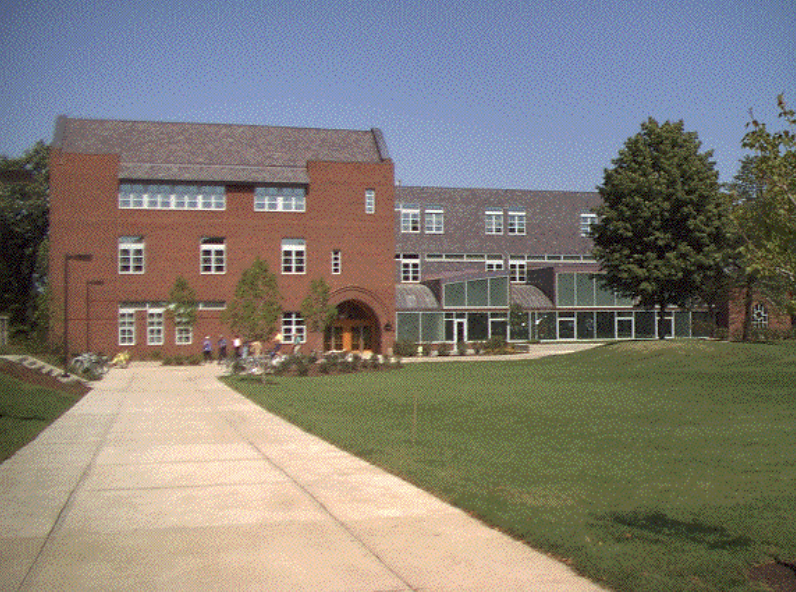

The Language and Dining Center is the youngest building of this exhibition built in 2002. LDC serves as both a contemporary and period piece of architecture. Architect Arthur Anderson wanted to blend the surroundings together, both the Modern Myers with the Collegiate Gothic Nourse. In a way, this is contextualism at its finest. The foreground is more in line with the Collegiate Gothic, while the background is Modern. The Language and Dining Center is a part of the “New Century” era.

← Back to Map